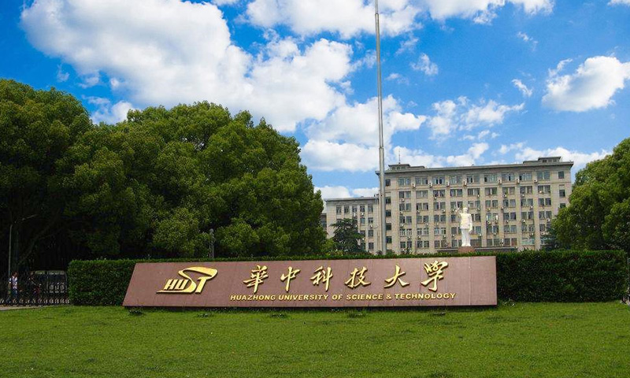
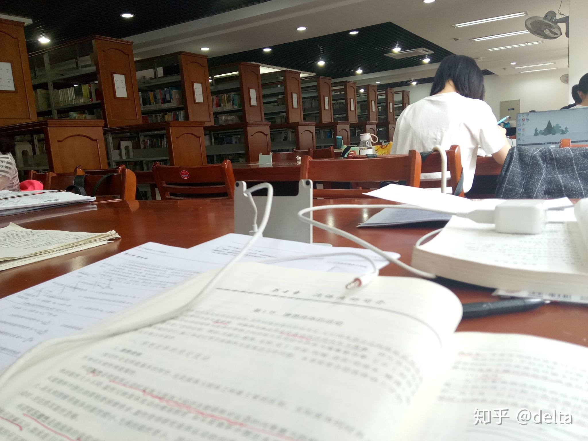
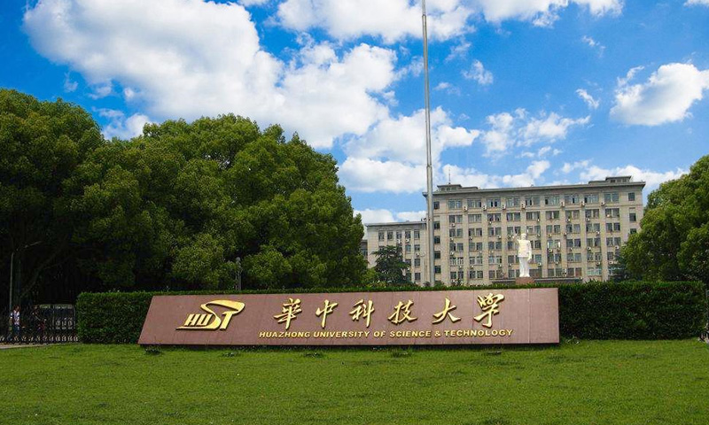
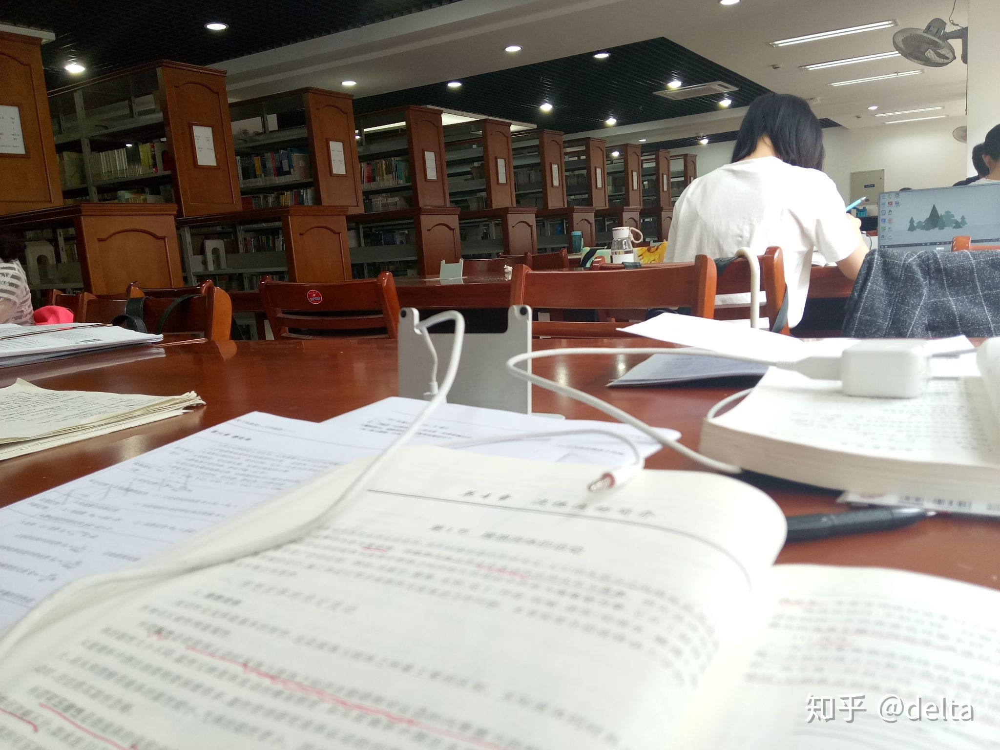

华中科技大学
学校简介
华中科技大学位于湖北省武汉市，是一所双一流的“985”、“211”全国重点大学。华中科技大学绿化覆盖率72%，有“森林大学”的美誉。这里汗牛充栋、端庄雅致，深厚的文化底蕴滋养着一代又一代勤奋好学的学子；这里绿树成荫、枝繁叶茂，亲和的校园环境时刻迎着各种各样可爱的小动物。每当在教学楼的廊里道间漫步时，总会不自觉地被大家对知识热忱的渴望所感染，变得踌躇满志。每当在枝条静静摇曳的大树下漫步时，感受那和风拂过发鬓，且看那落叶风中起舞，心情也不禁静下来，变得心旷神怡。
学校风光
 


